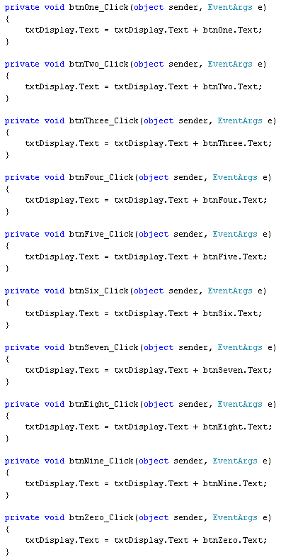

C# .NET Calculator - The Code
<< Continues from the previous section
Before we get to the code, let's just go through how our calculator is going to work:
- Click the number buttons. This will be the first number in the addition
- The first number you want to add will then appear in the text box
- Click the Plus button to tell the calculator you want to add
- The first number will disappear from the text box, ready for the second number
- Click the number buttons again to add the second number
- Click the equals button and the answer appears in the text box
The numbers on the buttons were put there by changing the Text property. So the only thing we need to do is to access this Text property. We can then use the button text as the text Property for the text box. Add the following line for your btnOne code:
txtDisplay.Text = btnOne.Text;
This says, "Make the Text in the text box the same as the Text that's on the button". Remember: whatever is on the right of the equals sign gets stored in whatever is on the left of the equals sign.
Run your programme and try it out. Click the number 1 button and it will appear in your text box. Click your number 1 a few times and what do you notice? You might think that clicking the number 1 button twice, for example, will cause the text box to display 11, and not 1. After all, you clicked it twice, so why shouldn't two number 1's appear?
The reason is doesn't is because you haven't told C# to keep the value that was already there. Each time you click the button, C# is starting afresh - it doesn't know what was in there before, and discards the number that you previously stored.
Halt your programme and return to your code. Change your line to this:
txtDisplay.Text = txtDisplay.Text + btnOne.Text;
This line is easier to read if you just look at the part after the equals sign. Which is this:
txtDisplay.Text + btnOne.Text;
When you're working with text, the plus symbol doesn't mean add - it means concatenate (you learned about this in the previous section when working strings). So C# will join the text in the text box with the text on the button. After it has finished doing this, it will store the answer to whatever is on the left of the equals sign. In this case, it's not a variable but the text property of the text box.
Run your programme again. Click the number one button a few times. You should find that the number one will appear in the text box more than once.
Halt the programme and return not to your code but to the form itself. (If you can't see your form, right-click Form1.cs in the Solution Explorer on the right. From the menu that appears, select View Designer.)
Now double click button 2, and add the following code:
txtDisplay.Text = txtDisplay.Text + btnTwo.Text;
The only thing that's different is the name of the button - btnTwo instead of btnOne. The rest is the same.
Do the same for the rest of your button, changing the name of the button each time. (You can copy and paste your code to save time.)
But your coding window should look like this, when you've finished:

Run your programme again, and click all ten of your buttons. Make sure that each number appears in the text box when its button is clicked.
Return to your form and double click the Clear button. Add the following line:
txtDisplay.Clear( );
After the full stop, you type the word Clear, followed by a pair of round brackets. Clear is a method you can use on text boxes. As its name suggests, it will clear the text box, leaving it blank.
Run your programme again, click a few numbers, then try your Clear button. The numbers should disappear from the text box.
In the next part, we'll add the code for the Plus button.